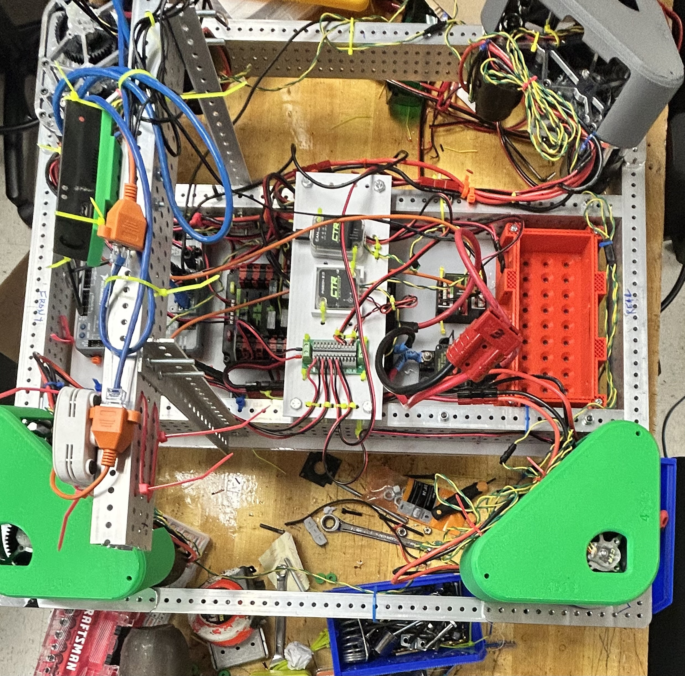

Robo Mechanical/Electrical Team
Welcome to the robot mechanical/electrical team! Passionate about innovation and technology, this team is committed to excellence in designing intricate mechanical systems and navigating electrical engineering challenges. From brainstorming ideas to overcoming obstacles, they work seamlessly together to bring their visions to life. Join them on an exciting journey of creativity, collaboration, and engineering brilliance.